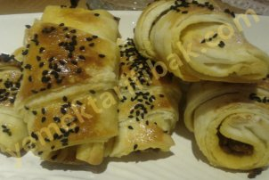
Kullanılan Malzemeler
1 tane yumurta
1 su bardağı süt
1 çay bardağı sıvıyağ
1,5 yemek kaşığı instant kuru maya veya yarım paket yaş maya
1 yemek kaşığı şeker
1 tatlı kaşığı tuz
4,5-5 su bardağı un
Arasına sürmek için
70 gr. tere yağı
Kat Kat Poğaça Yapılışı
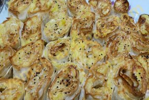
Kullanılan Malzemeler
4 tane hazır yufka
Sosu için;
2 tane yumurta
1 çay bardağı süt
1 çay bardağı sıvı yağ
İç harcı için;
2 tane haşlanmış patates
200 gram lor peyniri
tuz, kırmızı pul biber, karabiber
Patatesli Rulo Börek Yapılışı
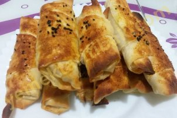
Kullanılan Malzemeler
4 adet hazır yufka
1 su bardağı sıvı yağ
1 yemek kaşığı sirke
3 yemek kaşığı un
İç Harcı için:
Lor peyniri
Yarım demet maydanoz
1 çay kaşığı pul biber
Üzeri için:
1 tane yumurta sarısı
çörek otu
Çıtır Börek Tarifi Yapılışı
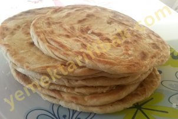
Kullanılan Malzemeler
2 bardak ılık su
1 çay bardağı yoğurt
1 çay bardağı süt
yarım çay bardağı sıvıyağ
2 çay kaşığı tuz
2 çay kaşığı karbonat
Aldığı kadar un
İçine:
Yarım su bardağı tahin
Yarım su bardağı eritilmiş tereyağı veya sıvıyağ
Tahinli Katmer Yapılışı
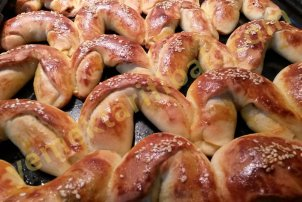
Kullanılan Malzemeler
2 adet yumurta (1 tanesinin sarısı üzeri için)
2 su bardağı ılık su
1 su bardağı süt
1 su bardağı sıvıyağ
1 paket yaş maya
2 yemek kaşığı şeker
2 tatlı kaşığı tuz
aldığı kadar un
İç harcı için;
300gr.kıyma
1 fincan sıvıyağ
2 tane haşlanmış patates
2 tane kuru soğan
1 çay kaşığı karabiber ve pulbiber
Kıymalı Ay Çöreği Yapılışı
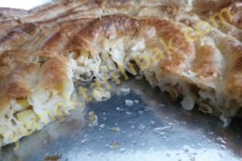
Kullanılan Malzemeler
4-5 su bardağı un
2 su bardağı ılık su
1 yemek kaşığı tuz
150 gr. tereyağı
1 çay bardağı sıvı yağ
İç harcı için:
5 tane patates
2 tane kuru soğan
Üzerine sürmek için:
1 yemek kaşığı tereyağı
Boşnak Böreği Yapılışı
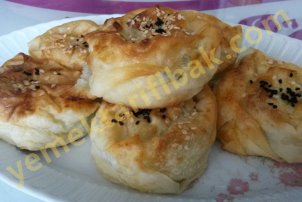
Kullanılan Malzemeler
4 yaprak yufka
Sosu için:
2 tane yumurta
1 su bardağı yoğurt
yarım su bardağı sıvıyağ
1 çay kaşığı tuz
İç harcı için:
250-300 gram lor peyniri
yarım demet maydanoz
1 çay kaşığı pul biber ve karabiber
Peynirli Gül Böreği Yapılışı
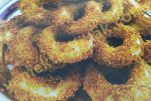
Kullanılan Malzemeler
125 gram margarin( yarım paket margarin)
1 tane yumurta
1 çay bardağı sıvıyağ
3 çorba kaşığı yoğurt
1 paket kabartma tozu
1 çay kaşığı toz şeker
1 çay kaşığı tuz
Susam
Kandil Simidi Yapılışı
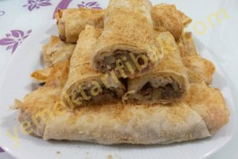
Kullanılan Malzemeler
4 tane yufka
1 tane yumurta
5 tane patates
250 gr. kıyma
1 çay bardağı sıvı yağ
1 çay bardağı süt
1 çay bardağı su
1 çay kaşığı pulbiber
1 çay kaşığı karabiber
1 su barbağı galeta unu
1 çay kaşığı tuz
Kıymalı Patatesli Çıtır Paneli Börek Yapılışı
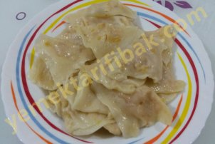
Kullanılan Malzemeler
1 yumurta
3 su bardağı un
1 tatlı kaşığı tuz
1 su bardağına yakın su
İç Malzemesi:
1 su bardağı nohut
1 çay kaşığı pul biber ve karabiber
1 çay kaşığı tuz
Üzeri için:4 yemek kaşığı tereyağ
Nohutlu Kulak Yapılışı
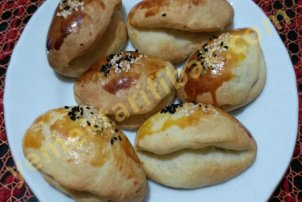
Kullanılan Malzemeler
2 tane yumurta(birinin sarısını üzeri için ayır)
Yarım paket margarin(oda sıcaklığında olacak)
1 çay bardağı sıvıyağ
1 çay bardağı yoğurt
1 paket kabartma tozu
1 tatlı kaşığı tuz
Aldığı kadar un
İç malzeme:
250 gr beyaz peynir veya çökelek
Kolay Poğaca Yapılışı
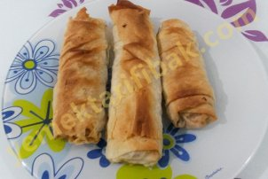
Kullanılan Malzemeler
3 adet yufka
4 tane patates
250 gr. kıyma
yarım çay bardağı sıvı yağ
1 çay kaşığı pulbiber
1 çay kaşığı karabiber
1 çay kaşığı tuz
Kıymalı Patatesli Börek Yapılışı
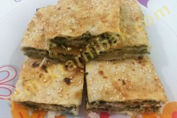
Kullanılan Malzemeler
4 adet yufka
2 tane yumurta
250 gr. ıspanak
1 su bardağı lor peyniri
1 çay bardağı sıvı yağ
3 yemek kaşığı yoğurt
Ispanaklı Börek Yapılışı
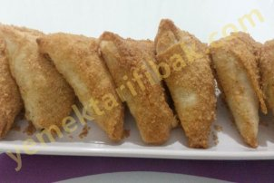
Kullanılan Malzemeler
4 adet yufka
250gr lor peyniri
1 su bardağı süt
yarım su bardağı sıvı yağ
yarım demet maydanoz
1 bardak galeta unu
Peynirli Muska Böreği Yapılışı